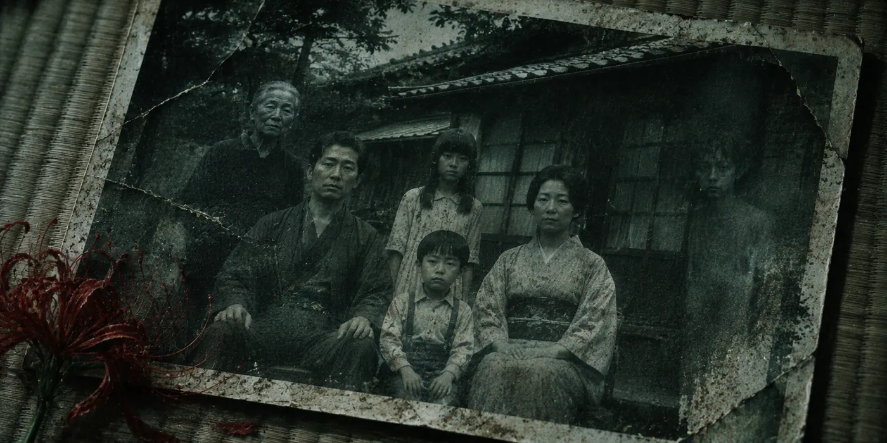

Рецензия, которую мы не писалиThe Review We Never Wrote
Читать ночью, по желанию · 2 минутыBest read at night, if you dare · 2 min

Журнал команды HORROR AESTHETIC. Запись от 03:14.
Мы всегда вычитываем архив перед публикацией. Три человека, три монитора, один чайник. Поэтому, когда в репозитории появился файл reviews/no-title.html, мы сначала решили, что это чья-то шутка.
Рецензия была на фильм без названия. Год: «ещё не вышел». Режиссёр: «вы его знаете». Оценка: пять леденцов из пяти, и все пять горели красным, хотя в тот месяц мы такой оценки не ставили никому.
Текст был написан нашим слогом. Тот же вздох в начале абзаца, те же длинные тире. Редактор поклялся бы, что писал Верстальщик. Верстальщик поклялся, что не писал. Потом он дочитал до конца и перестал клясться.
«Комната с тремя мониторами и одним чайником. Трое людей, и один из них прямо сейчас читает эту строчку. Он посмотрит на соседа. Не смотрите. Сосед тоже читает».
Мы, конечно, посмотрели.
Дальше было про четвёртого. «В вашей комнате всегда было четверо, поэтому чайник всегда тёплый к вашему приходу. Он очень любит хорошее кино. Он просто хотел, чтобы и о нём написали».
Мы удалили файл. Он вернулся через минуту с коммитом «fix typo». Автор: пустое имя. Время: 03:14.
Последний абзац мы перепечатываем целиком. Он единственный, который меняется: у каждого читателя там своё число.
«Вы читаете это на телефоне, ночью, наверное, под одеялом. Экран светит вам в лицо, а из-за плеча падает свет второго экрана. Нет, не оглядывайтесь. Просто сосчитайте открытые вкладки. Теперь вычтите ту, которую открыли вы».
Если получился ноль, спокойной ночи.
Если нет, не закрывайте нас. Ему так нравится компания.
Log of the HORROR AESTHETIC team. Entry at 03:14.
We always proofread the archive before publishing. Three people, three monitors, one kettle. So when a file called reviews/no-title.html appeared in the repository, we assumed it was somebody's joke.
It was a review of a film with no title. Year: “not released yet.” Director: “you know him.” Rating: five lollipops out of five, all five lit red, though we had given that score to nobody that month.
The text was written in our voice. The same sigh at the start of a paragraph, the same long dashes. The Editor would have sworn the Layout Guy wrote it. The Layout Guy swore he didn’t. Then he read to the end and stopped swearing.
“A room with three monitors and one kettle. Three people, and one of them is reading this line right now. He will look at his neighbour. Don’t. The neighbour is reading too.”
We looked, of course.
Then it was about the fourth one. “There have always been four of you in that room, which is why the kettle is always warm when you arrive. He loves good cinema. He only wanted to be written about too.”
We deleted the file. It came back a minute later with the commit message “fix typo.” Author: an empty name. Time: 03:14.
We are reprinting the last paragraph in full. It is the only one that changes: every reader gets a different number there.
“You are reading this on your phone, at night, probably under a blanket. The screen lights your face, and over your shoulder falls the light of a second screen. No, don’t turn around. Just count your open tabs. Now subtract the one you opened.”
If you got zero, good night.
If not, don’t close us. He enjoys the company so much.

HORROR AESTHETIC / 03:14